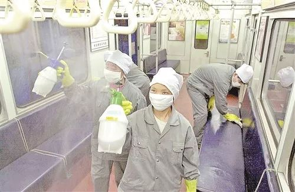
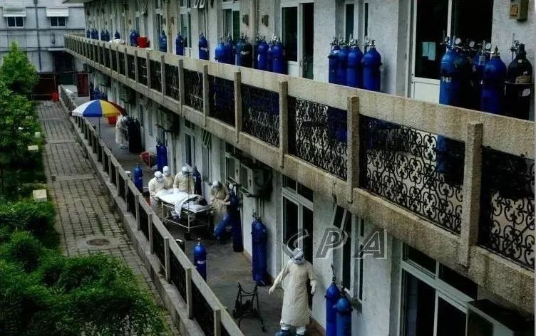
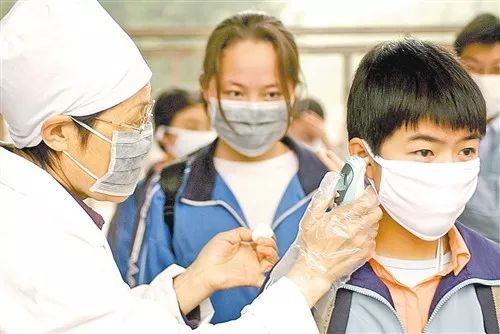
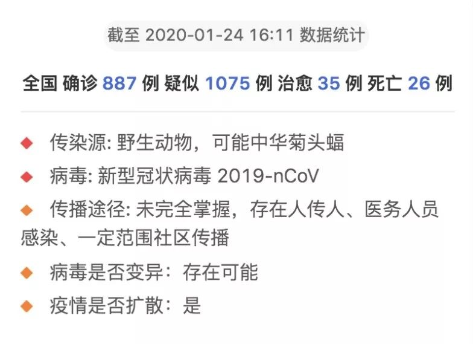

湖北黄冈：一家四口疑似病例难确诊
原文链接 备份链接 如果我爸真的不行了，因为没有确诊的条件，他最后都是一个“疑似病例”，我们都不能确定是不是这次新型冠状病毒的原因。 口述 | 冯红 实习记者 | 岳颖 记者 | 王珊 我家在湖北黄冈，家里有四口人，父母、弟弟和我，我们一 …


要不要在今天发这篇稿子，我们其实很犹豫。这是一个看了会心碎的故事。今天毕竟是大年三十，是一年以来真正可以卸下疲惫，沉浸在亲人相聚快乐里的时刻。
可是怎么说呢？SARS过去17年了，也许对很多人来说那是一场遥远淡漠的记忆。而对有亲人逝去的人来说，那是连根拔起的摧毁。
那些逝去的人不是数字，是父亲，母亲，女儿，姐妹，兄弟。如果每个人都能多做一点，多争取一点，多负责一点，多专业一点，也许很多孩子就不用活在丧失之痛的枷锁里。
新的一年开始了，祝大家新年快乐。希望疫情早点过去，每个人都健康平安。
文 | 房凝
编辑 | 金石 金匝
运营 | 肖睿
新型冠状病毒性肺炎发生后，很多SARS亲历者的记忆被带回到2003年。31岁的房凝也是如此。那一年她才14岁，家中8人，有5人感染SARS，被收治在北京不同的医院治疗，后来她的母亲因此离世。房凝和家人的生活，被2003年彻底切割为两个部分，失去至亲的悲伤，是无法彻底摆脱的。她希望每一个人都能更重视这种疾病，不让悲伤重现，而不仅仅是恐惧。
以下是房凝的自述。
妈妈被送去医院的那天，我是伴着窸窸窣窣的通话声醒来的。
她正在给舅舅打电话，压低声音说自己病了，请他以后多去看姥姥，劝说他在家里备一些食品和常用物品。
那是2003年4月，传言比确诊来得早得多，北京封城之说流传甚广，摆在货架上的物品被人哄抢。之前3月1日，北京首例输入性SARS确诊，3月中旬开始，“非典流行”的声音开始在四处发酵，所有人都谈论着这一件事。再后来，电视台开始更新确诊和疑似数字。
妈妈开始发烧咳嗽的当夜，是她和爸爸结婚十七周年纪念日。14岁的我指着电视里的消息跟妈妈说，即便得了也没事，死亡率和流行感冒一样，哪那么容易得个感冒就死了呢？
当天晚上，我还是执拗地想和妈妈睡在一张床上。那些年，爸爸经常加班到很晚，我与他并不亲近，SARS之前的日子我都是和妈妈一起度过的，两个人吃饭，她陪我完成作业，我搂着妈妈睡觉。那天夜里醒过来，我看到妈妈戴着口罩，坐在沙发上，她几乎一夜没睡，怕离得太近传染我，又忍住咳嗽怕吵醒我，我站在她身后，看到她的肩膀微微发抖。
挂断给舅舅的电话后，妈妈要求我戴上口罩，我却觉得那是对她的不尊重，死活不戴，说着说着两个人都哭了。妈妈已经没有力气做饭了，倒在床边，我煮了速冻水饺，她吃了5个，那是她在家里吃的最后一顿饭。
饭后，她指了指自己的一张两寸照片，照片里她的刘海被吹得高高的，那是她喜欢的样子。她跟我说，如果我死了，葬礼上就用这张。
我们一家8口人，都住在一栋楼里。最早感染的是大伯，3月中旬，他被诊断为重度肺炎，高烧近40度，稍有起色后被医院转诊到小区诊所输液。那间诊所没有床位，30平米的屋子里往往坐着20来个人。
4月21日，大伯确诊。两天后，是妈妈。再之后是奶奶、爷爷、哥哥。家里5个人感染SARS，躺在北京市不同医院的病床上。剩下我和爸爸、大妈隔离在家。
家人比我要了解这场疫情的可怕程度。大伯临去医院前，跪在地上给爷爷奶奶磕了个头，他担心自己回不来，要感谢父母的养育之恩。爷爷奶奶分开的一瞬，他们互相看了一眼，在一起的47年，都在那一眼里。妈妈离开时似乎清楚知道自己的去处，给我留了一笔钱、一封信，用手绢包着，她还带走了我的一张照片。
每个人都是爸爸送过去的，他留下住院物品，看着他们一个个走进隔离区。隔离区内外用一层厚实的塑料布隔开，爸爸记得妈妈的最后一个动作是，回头，冲他摆了摆手。
后来，爸爸告诉我说，那一刻他觉得天花板似乎转了起来，整个世界天旋地转，一切都变了。

▲2003年4月21日,北京地铁的工作人员在车厢内消毒。图 / 网络
第一天住进隔离病房的时候，妈妈打回来电话哭了，菜是凉的、饭是凉的，她和护士提意见，被抱怨“怎么这么多事儿”。
没几天，妈妈就不在电话里抱怨饭食了，我以为是逐渐好起来了，但实际上，她已经吃不下什么了。后来翻看她的病历我才知道，住院第五天她就用上了呼吸机。
她和大伯都属于重症患者，入院的第三天，就被转去了北京地坛医院，送上120的时候，大伯在一辆车上看到了妈妈，他想叫她，但是一开口就咳嗽，他至今懊悔，“如果我知道那是最后一面，那我爬也会爬过去看她一眼的。”

▲2003年5月11日，地坛医院的非典病房。图 / 贺延光《抗“非典”纪实摄影作品》
被隔离在家的日子是痛苦的，甚至是羞耻的，我怕同学知道我家的事情，怕被当作异类，打来电话我都会刻意不接，等几个小时再回过去，营造出一种我不是时时在家，不是无处可去的氛围。
每天清晨起床，家里充满着过氧乙酸的味道，尤其是卫生间里，马桶圈上冰冰凉凉的，坐上去有被扎了一下的感觉。
然后是等待。每天上午，街道办的工作人员会来敲门。他们会在头一天打来电话，问次日需要的食品、物品。就像对接头暗号一样，几声门响之后，我拿着手表等着，五分钟，再开门把东西领进来。偶尔从楼上望下去，工作人员早已消失，不见踪影。那是我一天一次与外界联结的仪式。
每一天都没什么盼头，学校已经停课，电视里的空中课堂并没人有兴趣听，我穿着睡衣在充满乙酸味的屋子里游荡。手机成为了我和妈妈的唯一联系，我每天精神紧张地握着手机，一遍遍地打妈妈的电话。
屏幕发出的亮光刺激着我，有时候让我不能逃离，不去设想她的情况，有时候又提醒我她就在那一边，离我不远。刚开始妈妈的电话是通的，有时候她会接听，我能听到电话里她浓重的呼吸声和咳嗽声，之后通话时间越来越短，后来就再也没拨通过。
大伯确诊14天后，我和父亲、大妈已被解除隔离的告示贴在了电梯间最醒目的地方，尽管如此，我们也几乎没有出门。唯一一次，大妈下楼倒垃圾，回家后不到一小时，警察敲门，说隔壁有人报了警，那是我当时最焦虑和厌烦的时刻。
噩耗很快到来。有一天睡醒，听到我爸冲着电话哭喊，挂了电话他跟我说，爷爷不在了。
这么多年，爸爸都活在愧疚里。他送爷爷去医院的时候，爷爷只有轻微的咳嗽，医生建议回家吃药静养。爸爸坦白了家里已有人确诊SARS的事实，医生马上建议住院隔离治疗。
即便如此，爷爷和堂哥也属于轻症，从始至终没有高烧，他们被转去北京佑安医院，住在同一个病房。爷爷去世的那天早上，护士来通知他们三天后出院，堂哥去房外接水，回来的时候，看到爷爷已经歪倒在床上，心脏病发，抢救无效。
那天是5月4日，直到那时，我都以为爷爷是家里第一个离世者。接下来的日子，我开始变得有些神经，和自己暗自打赌，“如果这片叶子在接下来半分钟里没有晃动，就意味着我妈还活着。”如果没有我会激动地大笑，如果有一点晃动我会突然大哭。我盯着日历，算每一天是否“吉利”，到5月14日的时候，因为“我要死”的谐音，我几乎崩溃，一遍遍地摩挲直板手机键盘上那几个熟悉的数字。不到一个月，一个几乎崭新的手机，有三个按键被我摩挲得掉了漆。
直到五月底，爸爸终于撑不住，告诉我，5月1日，妈妈确诊的第九天，她就已经离世。当时还有一个谣传，称因为是疫病，医院不会负责火化，所有尸体都会被直接深埋地下。
我回到房间，锁上门，靠墙坐在地板上，一下下地用后脑勺往墙上撞，直到磕出一个大包。我担心只有40岁的母亲逐渐变得冰冻，担心深埋在地下泥土会渗入她的皮肤，担心她的身体一点点地被细菌腐蚀、被昆虫啃咬。
几次梦里，我贴在妈妈的怀里睡着，搂着她的脖子，她笑着看我，然后一歪头，断了气息。那个歪头的动作太让人难过，我经常大哭大叫着从梦里醒来，想象着她在人世间最后一秒的状态。
我没见到她的遗体，等到8月接回时，已经只剩骨灰。我抱着骨灰大哭，不明白一个活生生的人，怎么会变成只有几百克的重量？
后来，因为怕被传染，妈妈的钱包和一切物品都被烧了，只剩当时她带走的我的那张照片，被护士装在了透明口袋中，四个角有消毒水泡过发白的痕迹，是我领回的唯一一样遗物。
现在想来，我最后一次见到妈妈是在电视上，镜头晃过，她穿着蓝白条纹的病号服，戴着氧气面罩，艰难地对着镜头比出了一个v字手势。那一段被用在众志成城抗击非典的宣传片里。
她打的最后一通电话是爸爸接的，她在电话里说，想要爸爸带酸奶和果茶来，这些都不是她爱喝的东西，她解释说，是喝了隔壁床送的，想还对方的人情。
那是她去世的前一天，因为被隔离，没办法送过去，爸爸打电话给亲戚朋友，但听说要去地坛医院，都被婉拒。直到第二天，妈妈的一位好友帮忙送到，她站在守门的人身边，一遍遍写下妈妈的名字，过来交接的负责人先后来了三个，每一个人回去查资料的时候，这位阿姨心就紧了一下，直到最后一个人告诉她，人上午已经没了。
直到现在，每年清明，爸爸都会拿酸奶和果茶到墓地，那是他的遗憾。
6月1日，我和爸爸去接奶奶，她后来被安置在北京市小汤山医院非典病房，这座医院仅用了8天建成，收治了680名确诊病人，后来被称为中国版的“寂静岭”，已经在10年前拆除。
小汤山地区在当年并不繁华，医院是军队康复疗养院改建的，从八达岭高速（今京藏高速）一路开过去，能感觉到愈发荒凉。

▲2003年4月，正在日夜抢工建设的北京小汤山医院。图 / 视觉中国
奶奶没有手机，没法和外界联系，她白天打激素，努力下床走动，夜里腿部疼痛难忍，无法入睡。她后来告诉我，睡不着的时候，她能听见简易病房里不停止的咳嗽、哀嚎和哭泣声。
奶奶回家隔离14天之后，得到了疾控中心发放的解除医学观察同意书。我们在这个基础上，又自行加了10天。24天后，我陪奶奶下楼，那天正好是世界卫生组织宣布，北京从SARS疫区名单中删除的日期，我们刚吸了一口自由的空气，原本楼下坐一排的老人们立刻散开，唯一一个想过来和奶奶打招呼的老人，被儿媳妇拉了一下。
再之后，奶奶也愈发孤独了。她还没能接受爷爷离开的事实，家人也各有各的伤痛，顾不上开解她。SARS结束两个月后，有一次，我放学回家，看到奶奶站在楼下，眼睛下面的肌肉似乎在一夜间没有了，眼袋耷拉着，满头花白的头发，两只手背在身后，没人跟她说话。
年幼失母，我的青春期好像延长了。
那段时间，我变得自怜、任性、跋扈。在家，我痛恨爸爸隐瞒了我近一个月，和他关系紧张；在学校，我把张洁写的《世界上最爱我的那个人去了》大喇喇地摆在课桌上，似乎在宣示自己受到了数倍于同龄人的痛苦，理应受到更多的照顾和理解。
我确实也得到了一些特殊的“关照”。学校复课后，进门先要过一次体温枪检测，我在家量好体温后去学校，还是屡屡收到不合格的通知。
被拦在校门外两周后，我想出了一个办法，每天早起半小时，先在家量好体温，确定正常后，用隔夜冰好的袋装牛奶一个捂在脑门上、一个夹在腋下，然后一步一步地慢速走去学校，路上碰到同学也从不与人同行，生怕在7月的高温下快步走出汗，影响体温。

▲2003年6月4日清晨,太原市第五中学校医在校门口为高三学生测量体温。 图 / 网络
这种小心翼翼的姿态现在想来有些心酸，但在当时，即便体温枪没有超过36.5度，我还是被拦在门外，甚至与值班老师发生吵闹，一度成为了校园里有名的“问题学生”。
这种状态一直延续到了初三，我整个人透出一种慵懒的“垮”和自认为很“酷”，我穿大大的校服，做课间操时候故意动作做得很不到位，被老师叫到台上，给全学校展示——现在想来，那也许是我自卑又自怜的一种伪装。在最执拗的那几年里，我很少哭，除非是遇到激烈的争吵，或者旁人言辞间散出鄙夷，眼泪才会流下来。
直到现在，家人去世已经快17年，我仍在反思自己当时的状态，我把这些年分成两个阶段，前7年，我在可怜自己，大片的快乐似乎在一瞬间被抽离干净，坐在公交车上看到小女孩牵着妈妈的手，靠在妈妈的肩上，我会下意识地转过头去；后来的10年，我开始心疼他们，心疼他们的生命突然被一场瘟疫带走，却至死不知是什么原因。
2003年，也成为我们家庭分割记忆的坐标。
2003年之前，我家还是个美满的8口家庭，祖孙三代。2003年之后，每一年的三十晚上，我们都会先给爷爷和妈妈供上食物，祭拜后再开饭。直到现在，姥姥还没办法走出2003年，因为想念她唯一的女儿，她已经哭成了干眼症，走在大街上，看到和妈妈相似的人，她会一路跟着，看到我，她偶尔会喊出妈妈的名字。
妈妈的死讯是我告诉姥姥的，人情凉薄，亲戚朋友那时不走动了，也没人告诉她后来的情况。这之后，舅舅们和我家也逐渐没了来往。他们潜意识里觉得，妈妈是在我家“被害死”的，无从辩解。
治疗SARS时使用的大量激素，也让大伯、奶奶和堂哥有骨质疏松的迹象。最严重的是大伯，治愈后没有多久，他便离开了工作岗位，办理了提前退休。他的双肺已经重度纤维化，即便是安静的时候也会呼吸困难。这些年，他的双腿越来越细，股骨头多处坏死，起床躺下或是蹲下上厕所，都需要外力搀扶。
他总是会做同样的梦，梦见自己像鱼一样在深海里潜泳，因为没有鱼鳃，无法呼吸，双腿也不知去了哪里。
今年的疫情一发生，我好像又闻到了记忆里的过氧乙酸味，也感觉到社会在一点点被割裂，武汉的病人滞留在各处，却无法确诊是否为“新型冠状病毒肺炎”，其他省市的人们一边提到武汉避之不及，更过分的，还有人会讲起段子和笑话。恐惧很正常，但更重要的，是真正重视这种疾病。
武汉封城的前一天晚上，爸爸坐地铁回家。身后，两位中年女性正在大声谈论。“肯定没事，咱们中国人多，就不怕死。”“就是，当年非典说得那么严重，不也没死多少人吗？”
爸爸告诉我，他当时扭头看了一眼，转头捂紧了自己的口罩，后来，他手机的新闻推送显示，当天湖北已有17人死亡。

▲截至目前，新型冠状病毒感染肺炎疫情实时动态。图 / 丁香园

每人互动
你身边有这次肺炎的亲历者吗？

文章为每日人物原创
侵权必究


每人作者
微信扫一扫赞赏作者 赞赏
长按二维码向我转账
受苹果公司新规定影响，微信 iOS 版的赞赏功能被关闭，可通过二维码转账支持公众号。
原文链接 备份链接 如果我爸真的不行了，因为没有确诊的条件，他最后都是一个“疑似病例”，我们都不能确定是不是这次新型冠状病毒的原因。 口述 | 冯红 实习记者 | 岳颖 记者 | 王珊 我家在湖北黄冈，家里有四口人，父母、弟弟和我，我们一 …
原文链接 备份链接 【财新网】（记者 黄蕙昭）除夕夜的武汉医院并不平静：人们欢喜静待新一年到来之时，武汉一线的医疗队伍仍在坚守一场未竟的战争。繁忙的救护节奏未因节日有丝毫松缓：从早上七点起，医护人员就到岗穿戴防护用具，期间不喝水、不入 …
原文链接 备份链接 根据国家卫健委的通报，截至1月23日零点，共统计到国内新型冠状病毒感染的肺炎确诊病例571例，其中超过400例来自湖北。死亡17例，均来自湖北。此刻的武汉面临以下问题：试剂盒数量不够、确诊艰难、床位短缺、高度疑似患者 …
原文链接 备份链接 2003年SARS疫情，常住人口最多（1700万）的上海市，仅有8人感染。且都为散发状态，未出现大规模聚集性爆发。 上海市在疫情未到来时，就做了充分的准备。下沉到基层社区、落实到个人的防控措施，对于疫情控制起到重要 …
原文链接 备份链接 记者/韩谦 魏晓涵 李佳楠 张帆 颜星悦 佟晓宇 梁婷 李东 郭慧敏 实习记者/陈威敬 龙天音 编辑/杨宝璐 宋建华 被确诊为河南省首例新型冠状病毒感染的肺炎患者，曾于1月8日在太康县人民医院治疗 国家卫健委消息，截 …